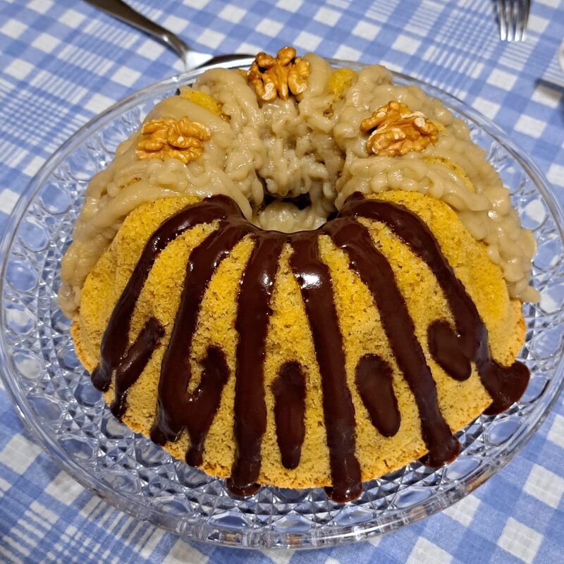
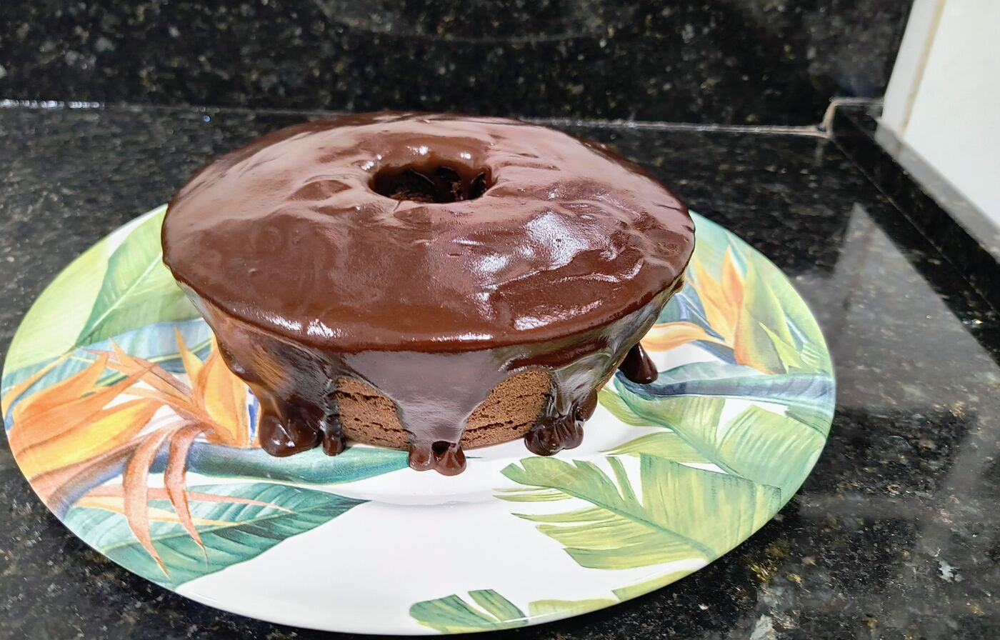
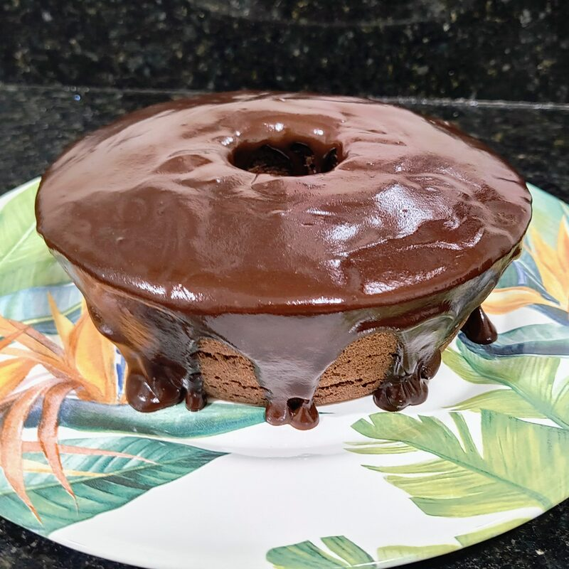
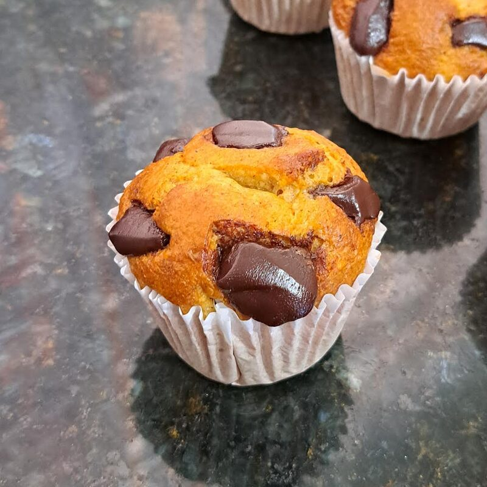

Bolossem glútensem lactose
Bolo Cascata de Nozes
Bolo macio com camadas de creme e nozes crocantes.
Contém ovo, amêndoa e nozes.
Pedir esteSem glúten · Sem lactose · Brasília
Para quem tem intolerância ao glúten ou à lactose e para quem quer comer melhor sem abrir mão do doce. Receitas artesanais, feitas com ingredientes que nutrem.

sem glútenNosso jeito de fazer
Todas as receitas, sem exceção. No lugar do trigo e do leite entram farinha de amêndoas e leite de coco.
Castanhas, frutas, cacau, óleo de coco e açúcares menos refinados, como demerara e açúcar de coco.
Receitas elaboradas para ter menor impacto na glicemia.*
A receita só entra no cardápio se for boa de comer. Doce saudável não precisa ser sem graça.
* Se você tem diabetes, siga a orientação do seu médico ou nutricionista.
Para quem é
Feito por encomenda
Consulte valores e tamanhos pelo WhatsApp.

Bolossem glútenBolo macio com camadas de creme e nozes crocantes.
Contém ovo, amêndoa e nozes.
Pedir este
Bolossem glútenBolo de chocolate fofinho coberto com ganache.
Contém ovo, amêndoa e chocolate.
Pedir este
Muffinssem glútenMuffin de banana com pedaços de chocolate.
Contém ovo, amêndoa e chocolate. Sem lactose (contém proteína do leite).
Pedir esteSimples assim
Diga o que você quer e para quando.
Na sua casa ou em um ponto de encontro no Plano Piloto.
Entrega feita por nós, sem taxa.
Somos um pequeno negócio de Brasília que faz doces e salgados sem glúten e sem lactose. Cuidamos da nutrição e da saudabilidade de cada receita, e não abrimos mão do sabor.
Fazemos para quem tem intolerância e para quem quer uma alimentação mais leve no dia a dia.
Não. Nossa cozinha manipula ovos, amêndoas, castanhas, nozes, amendoim e gergelim, e pode haver contaminação cruzada. Nossos produtos são indicados para pessoas com intolerância ao glúten ou à lactose e para quem busca uma alimentação mais saudável.
Não. Todos os produtos são sem lactose, mas alguns levam ghee (manteiga clarificada), que pode conter proteína do leite. Isso está indicado em cada produto.
Farinha de amêndoas e mix de farinhas sem glúten no lugar do trigo, e leite de coco e óleo de coco no lugar do leite e da manteiga. Para adoçar, usamos açúcar demerara e açúcar de coco.
No Plano Piloto, em Brasília. A entrega é feita por nós, na sua casa ou em um ponto de encontro, sem taxa.
Pelo WhatsApp. É só tocar em qualquer botão verde ou azul desta página. Não trabalhamos com aplicativos de entrega.
Nossas receitas são elaboradas para ter menor impacto na glicemia, mas cada pessoa responde de um jeito. Converse com seu médico ou nutricionista. Se quiser, enviamos a lista de ingredientes de cada produto.
Não achou sua dúvida? Pergunte pelo WhatsApp